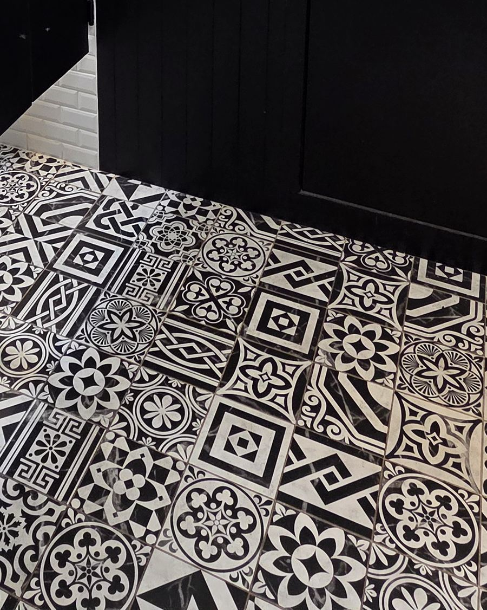
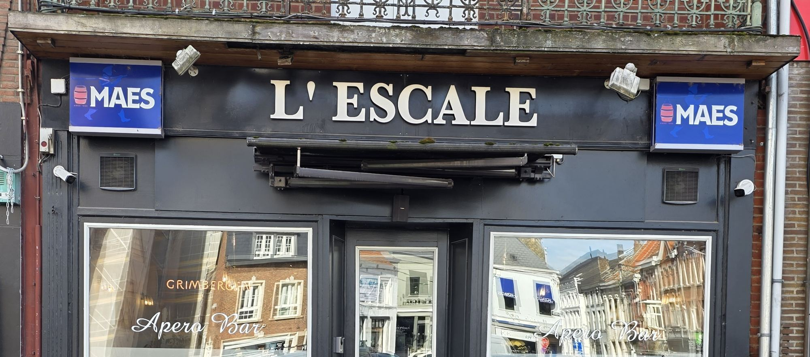
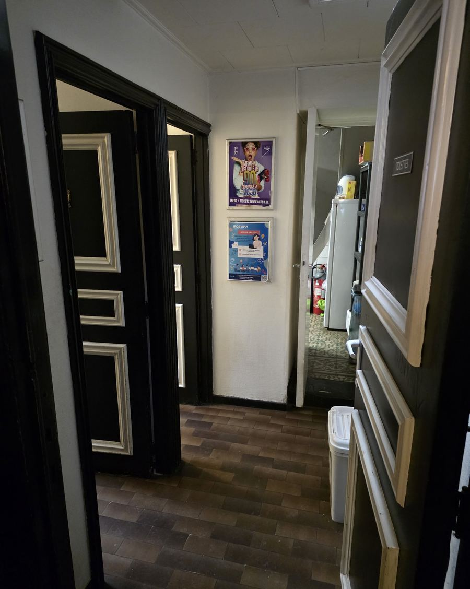
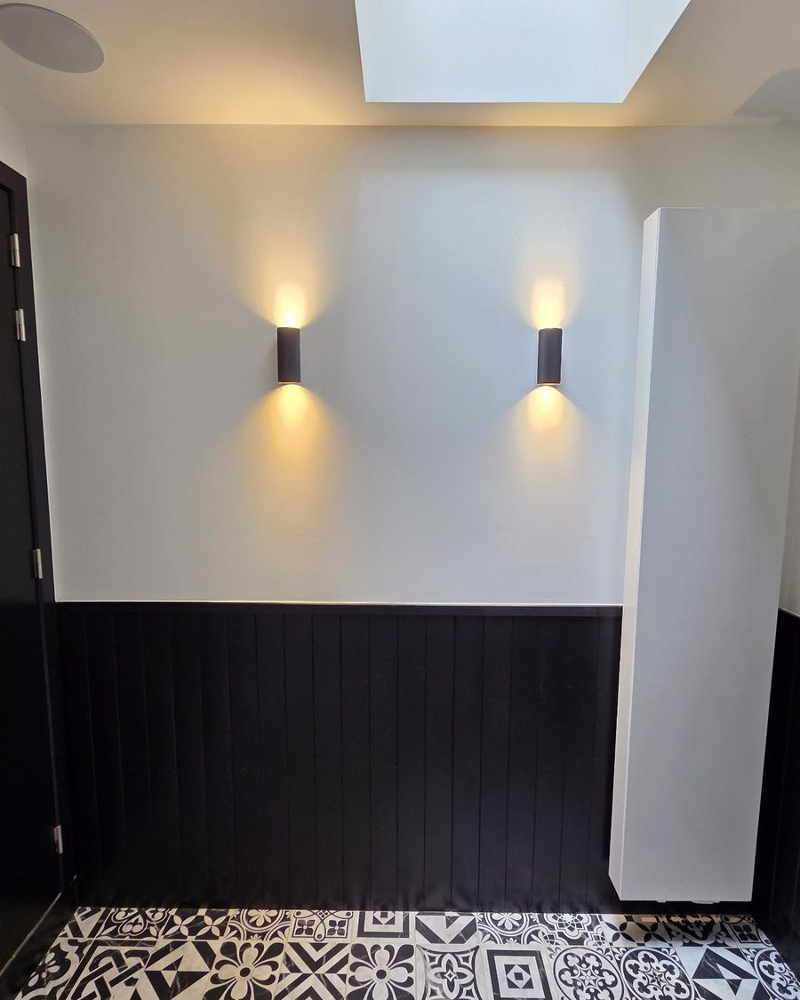
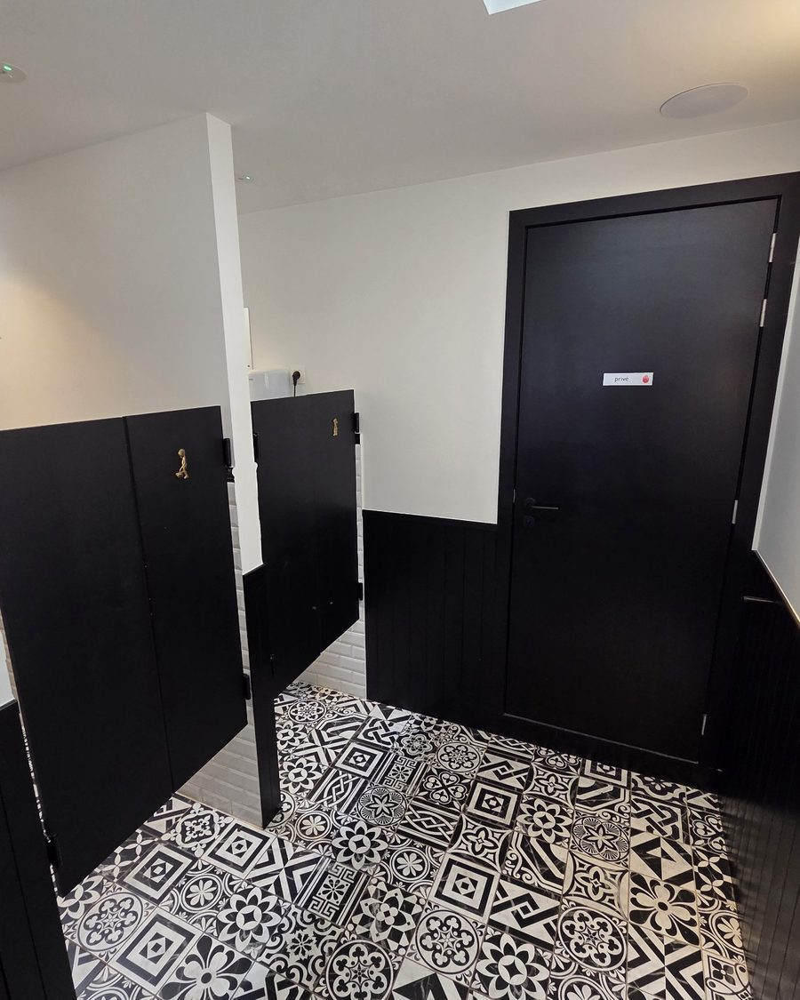

Een glas, een royaal bord, en alle tijd van de wereld.
- Doorlopend kleine gerechten
- Tegenover de kerk van Waver
- Tot 2 uur in het weekend


Een glas, een royaal bord, en alle tijd van de wereld.



De kaart
Doorlopend kleine gerechten: de klassiekers, goed klaargemaakt, en af en toe een stoofgerecht als de chef er zin in heeft.
Doorlopend geserveerd
Bij het aperitief
Af en toe, zolang de voorraad strekt
Het gerecht van het moment staat aangekondigd aan de toog. Prijzen in euro, btw inbegrepen.
Openingsuren
| Zondag tot donderdag | tot 1 uur |
|---|---|
| Vrijdag, zaterdag en de dag vóór een feestdag | tot 2 uur |
Gesloten van 20 januari tot 12 maart 2027.
Uitzonderlijke openingsuren vind je op onze Google-pagina.
Ligging

De renovatie
In januari 2026 werd het achterste deel van L’Escale volledig vernieuwd: gang, sanitair, zwart-witte cementtegels, zwarte lambrisering, klapdeuren en lichtkoepels. Dezelfde sfeer van een café van vroeger, met de afwerking van vandaag.
De werken werden uitgevoerd door Bien Bâti, renovatiebedrijf uit Sint-Genesius-Rode. Volgende stap in januari 2027: de voorzaal, de toog en de gevel.
Vóór · begin januari 2026



Na



